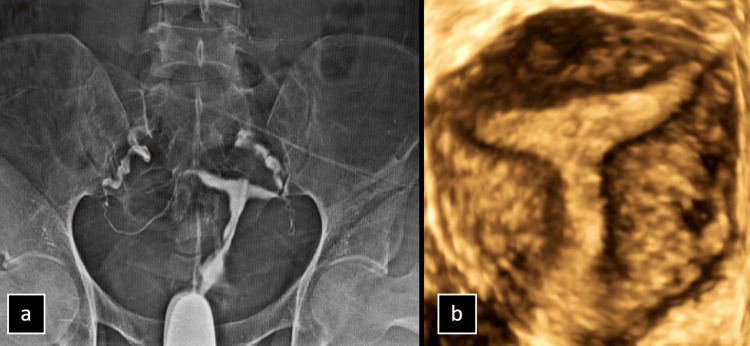
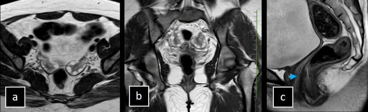
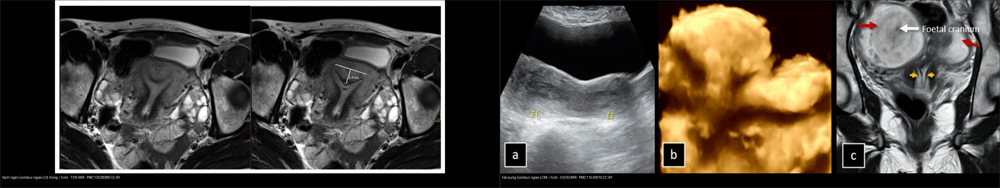
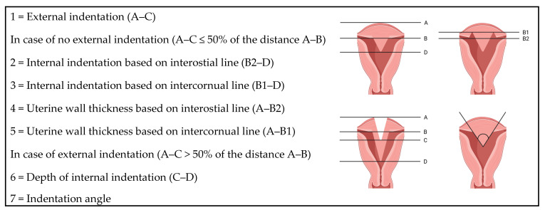
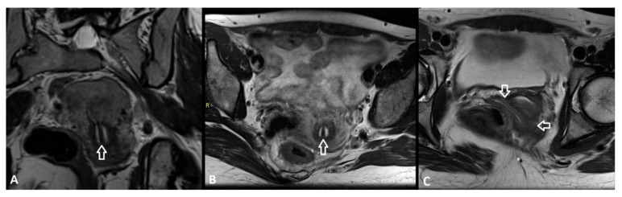
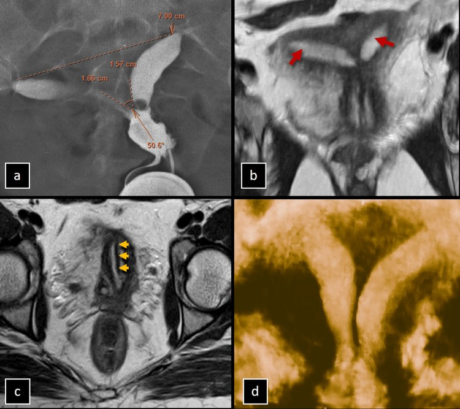
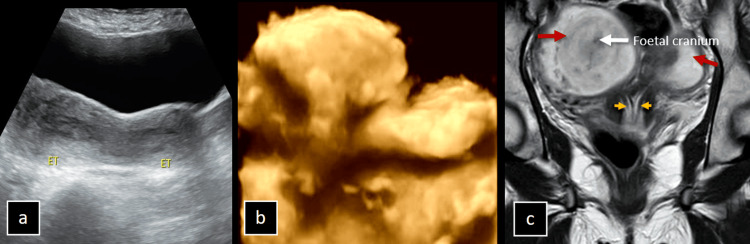
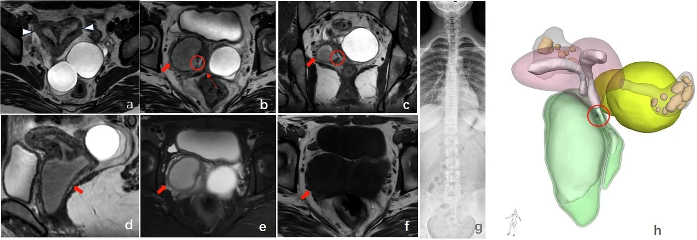
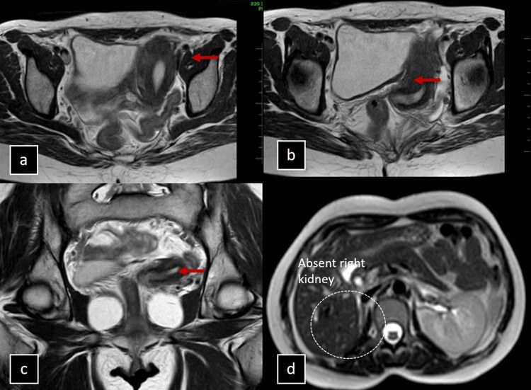

528 — Dị dạng tử cung bẩm sinh: vách ngăn vs hai sừng (ESHRE/ESGE & ASRM) / Müllerian duct anomalies
Tags: pattern:di-dang-tu-cung vung:tu-cung score:ESHRE-ESGE score:ASRM protocol:MRI-tu-cung protocol:3D-TVUS
Mức chắc chắn (certainty): tổng hợp y văn (literature synthesis) — nhóm tự biên từ y văn mở (Cureus 2024, Medicina 2026, Insights into Imaging 2026), số liệu định lượng lấy nguyên văn từ các bài gốc.
1. Tổng quan bệnh học – cơ chế hình ảnh: hai thì phôi thai (dung hợp vs tiêu hủy vách)
- Phôi thai học (embryology): hai ống Müller (Müllerian / paramesonephric ducts) đi xuống, dung hợp (fusion) ở đường giữa tạo thân–cổ tử cung và 2/3 trên âm đạo; sau đó tiêu hủy (resorption) vách trung gian để thành một buồng duy nhất. Dị dạng = lỗi ở một trong hai thì:
- Dung hợp thất bại → tử cung hai sừng (bicornuate) hoặc đôi (didelphys); nếu chỉ một bên phát triển → hemi-uterus (unicornuate).
- Tiêu hủy thất bại → tử cung vách ngăn (septate).
- Bất sản (aplasia) cả hai ống → MRKH.
- TẠI SAO ảnh hưởng sinh sản khác nhau (chốt lâm sàng): vách ngăn là mô xơ–sợi ít mạch máu (fibrous, poorly vascularized), niêm mạc phủ trên vách teo → trứng làm tổ không đủ nuôi dưỡng → sẩy thai tái diễn (recurrent pregnancy loss), thai lưu (đây là lý do cắt vách qua ngả soi buồng hysteroscopic metroplasty có ích). Ngược lại tử cung hai sừng có cơ bình thường ở hai buồng → tiên lượng sinh sản gần như bình thường → KHÔNG mổ.
- TẠI SAO MRI/3D-US phân biệt được: trên T2W, vách xơ cho tín hiệu thấp đều nằm giữa hai buồng nội mạc sáng, phân cách bởi cơ cận nội mạc tín hiệu trung gian; nhưng yếu tố quyết định là đường viền ngoài đáy tử cung (external contour) — chỉ thấy được trên mặt cắt vành (coronal) hoặc axial xiên vuông góc trục dọc thân tử cung. Đây là điểm mà HSG (chỉ thấy buồng) và mặt cắt axial thuần không cung cấp được.
- Ngưỡng định lượng (bắt buộc nhớ):
- ASRM 2021 (Pfeifer et al., Fertil Steril): vách ngăn (septate) = lõm trong ≥ 1 cm và góc lõm < 90°; hình cung (arcuate) = lõm trong **< 1 cm**, góc > 90°; hai sừng (bicornuate) = lõm ngoài > 1 cm. Vùng xám: lõm trong ≥ 1 cm nhưng góc ≥ 90° → ASRM coi là "không xác định" (indeterminate).
- ESHRE/ESGE 2013 (Grimbizis et al., Hum Reprod): xếp loại theo đường viền ngoài — lõm ngoài ≤ 50% độ dày thành cơ đáy (đo trên đường liên eo interostial line) → U2 vách ngăn (U2a một phần / U2b hoàn toàn); lõm ngoài > 50% → U3 hai thân (bicorporeal, gộp hai sừng + tử cung đôi). Kèm cổ tử cung C0–C4 và âm đạo V0–V4.
- Đồng thuận giữa người đọc thấp cho MỌI hệ (n = 71, Krippendorff α): AFS 0,63; CUME 0,57; ASRM 0,46; ESHRE/ESGE 0,33; ESHRE/ESGE cho nhiều ca không xác định nhất (9,9%) sau hội chẩn.
- Ví dụ số nguyên văn (Medicina 2026, Fig. 4): vách dài 1,4 cm, góc 96°, contour ngoài lồi → ESHRE/ESGE U2a, CUME = septate, nhưng ASRM = không xác định (vì góc > 90°). → Cho thấy cùng một tử cung, ba hệ ba tên.
2. Mẫu hình + chẩn đoán phân biệt theo cơ chế (Gamut)
- Gợi nhớ 1 câu: FUSION loạn → hai sừng/đôi/một sừng; RESORPTION loạn → vách ngăn/hình cung; APLASIA → MRKH.
- Nhóm tiêu hủy vách: tử cung vách ngăn (U2), hình cung (arcuate — biến thể bình thường), dysmorphic/T-shaped (U1; liên quan phơi nhiễm DES trong bào thai).
- Nhóm dung hợp: hemi-uterus (unicornuate, U4) — kèm bất sản thận cùng bên 30–40%; hai sừng (U3a), tử cung đôi (U3b) — hay có vách dọc âm đạo.
- Nhóm bất sản: MRKH (U5) — không thấy tử cung/cổ/2/3 trên âm đạo, buồng trứng bình thường, kiểu nhiễm sắc thể 46,XX.
- Nhóm tắc nghẽn một bên (obstructed): HWWS / OHVIRA (Herlyn-Werner-Wunderlich) = tử cung đôi/vách ngăn + tắc nửa âm đạo (khối dịch T2 sáng) + bất sản thận cùng bên, khởi phát sau dậy thì (đau bụng chu kỳ + ứ máu kinh).
- Nhóm không xếp loại (U6).

Tử cung hình chữ T: buồng hẹp, thành bên dày, ống dẫn trứng cụt. Nguồn: Ramakrishnan et al., Cureus 2024 Fig. 2 (PMC11526810), CC BY 4.0.
MRKH: bất sản tử cung–cổ–2/3 trên âm đạo, âm đạo dưới giảm sản, buồng trứng hai bên bình thường. Nguồn: Ramakrishnan et al., Cureus 2024 Fig. 7 (PMC11526810), CC BY 4.0.3. Bảng so sánh phân biệt (ma trận đối chiếu)
| Thực thể (entity) | Hình ảnh điển hình (3D-US / MRI T2) | Chốt vào (rule-in) | Chốt loại (rule-out) | Gợi ý xác nhận |
|---|---|---|---|---|
| Tử cung vách ngăn (septate, U2) | Hai buồng nội mạc, vách T2 tối đều, contour ngoài lồi/flat | Lõm trong ≥ 1 cm + góc < 90° + contour ngoài lồi (< 1 cm) | Lõm ngoài > 1 cm → hai sừng (không cắt vách sai) | Soi buồng cắt vách (metroplasty); nối sẩy thai tái diễn |
| Tử cung hai sừng (bicornuate, U3a) | Hai sừng phân kỳ, lõm ngoài sâu, cơ hai buồng bình thường | Lõm ngoài > 1 cm (> 50% thành cơ đáy) | Contour ngoài lồi + chỉ lõm trong → vách ngăn | Không mổ; tư vấn tiên lượng bình thường |
| Tử cung hình cung (arcuate) | Đáy hơi lõm vào lòng, contour ngoài bình thường | Lõm trong < 1 cm + góc > 90° | ≥ 1 cm + góc < 90° → vách ngăn | Không điều trị (biến thể) |
| Tử cung đôi (didelphys, U3b) | Hai thân + hai cổ tách hoàn toàn, thường vách dọc âm đạo | Hai thân/hai cổ riêng biệt | Một cổ + vách mỏng → vách ngăn | MRI vành; soi khi tắc |
| Hemi-uterus (unicornuate, U4) | Một sừng lệch bên, sừng thô sơ (rudimentary) cùng bên | Một sừng + sừng thô sơ | Hai sừng cân xứng → bicornuate | Luôn tìm bất sản thận cùng bên (30–40%) |
| MRKH (U5) | Không thấy tử cung/cổ/2/3 trên âm đạo, buồng trứng bình thường | Bất sản tử cung + 46,XX + tuyến vú bình thường | Tử cung còn nhưng tắc → HWWS | Siêu âm thận; karyotype; MRI |
| T-shaped / dysmorphic (U1) | Buồng hẹp hình chữ T, thành bên dày | Buồng hình T + thành bên dày | Buồng bình thường → không phải | HSG/3D-US; tiền sử DES |
| HWWS / OHVIRA | Tử cung đôi/vách ngăn + khối dịch T2 sáng nửa âm đạo + bất sản thận cùng bên | Tắc nửa âm đạo + bất sản thận cùng bên + ứ máu kinh | Thận hai bên bình thường → loại HWWS | MRI 3D T2; cắt vách ngang lưu thông |

*Trái: contour ngoài LỒI + vách trong 1,4 cm → vách ngăn (ESHRE/ESGE U2a). Phải: hai sừng phân kỳ, contour ngoài LÕM > 1 cm → hai sừng (bicornuate bicollis). Nguồn: PMC13028389 Fig. 4 (CC BY 4.0) + PMC11526810 Fig. 5 (CC BY 4.0), ghép bằngtools/make_composite.py (letterbox, giữ aspect).*
Đọc contour ngoài cho đúng (định nghĩa đo)
- Đường liên eo (interostial line, A–B): nối hai lỗ ống dẫn trứng. Lõm ngoài (A–C) đo từ đáy contour ngoài tới đường này; lõm trong (C–D) đo tới đáy vách trong lòng.
- Quy ước ESHRE/ESGE: lõm ngoài ≤ 50% A–B → coi như bình thường (U2); > 50% → U3 (hai thân). góc lõm (indentation angle) tính giữa hai bờ vách so với đường liên eo.
4. Protocol chụp + hệ phân độ/điểm chuẩn hóa
- Đầu tay (first-line): siêu âm 3D qua ngả âm đạo (3D-TVUS) với tái tạo mặt cắt vành (coronal reconstruction) — không xâm lấn, thấy được contour ngoài; dùng khi tầm soát dị dạng/đau vùng chậu.
- Khi nào chuyển MRI:
- Siêu âm không kết luận, dị dạng phức tạp, có tắc nghẽn (khối dịch nửa âm đạo), hoặc chuẩn bị phẫu thuật (cắt vách làm đường/mở vách âm đạo).
- Có thai: ưu tiên siêu âm; nếu cần MRI thì không cản quang.
- Protocol MRI tiểu khung: T2W axial + coronal + sagittal, trong đó mặt cắt vành/axial xiên đặt vuông góc trục dọc thân tử cung để bộc lộ contour ngoài; thêm T1W fat-sat khi nghi ứ máu (endometrioma/hematometra). Không cần tiêm cản quang thường quy.
- BẮT BUỘC: tìm bất sản thận cùng bên (unicornuate 30–40%; HWWS gần 100%) bằng siêu âm thận ± MR niệu đồ.
- Hệ phân độ ESHRE/ESGE 2013 (U0–U6) + C0–C4 (cổ) + V0–V4 (âm đạo):
flowchart TD
A["Nghi di dang: say thai tai dien / thai kho / dau bung chu ky"] --> B["3D-TVUS coronal; MRI T2 neu phuc tap hoac tac nghen"]
B --> C{"Lom ngoai > 50% do day thanh co day?"}
C -->|"Khong"| D["U2 vach ngan: U2a mot phan / U2b hoan toan"]
C -->|"Co"| E["U3 hai than: U3a hai sung / U3b tu cung doi"]
B --> F{"Chi mot than + sung tho so?"}
F -->|"Co"| G["U4 hemi-uterus: TIM bat san than cung ben"]
B --> H{"Khong thay tu cung/cổ?"}
H -->|"Co"| I["U5 bat san MRKH"]
D --> J{"Tac nghen nua am dao + bat san than cung ben?"}
E --> J
J -->|"Co"| K["OHVIRA/HWWS: cat vach ngang luu thong"]
J -->|"Khong"| L["Vach ngan: soi buong cat vach; hai sung: KHONG mo"]

Các phép đo chuẩn hóa: (1) lõm ngoài A–C; (2–3) lõm trong theo đường liên eo/liên sừng; (4–5) độ dày thành cơ; (6) độ sâu lõm trong khi lõm ngoài > 50%; (7) góc lõm. Nguồn: D'hoore et al., Medicina 2026 Fig. 1 (PMC13028389), CC BY 4.0.
Axial T2 ngang thân tử cung (A), cổ (B), âm đạo (C): vách chạy liên tục xuống cổ và vách dọc âm đạo không tắc. ESHRE/ESGE = U2b C1 V1. Nguồn: D'hoore et al., Medicina 2026 Fig. 3 (PMC13028389), CC BY 4.0.5. Biến thể bình thường và cạm bẫy
- Sóng co cơ tử cung (uterine contraction wave) trên T2: dải cơ co thoáng qua cho dải tín hiệu thấp giả "vách ngăn" — chụp lại sau vài phút/đợi hết co, hoặc đọc trên 3D coronal; đừng vội gọi vách ngăn.
- Tử cung hình cung (arcuate) là biến thể: lõm trong < 1 cm → không phải vách ngăn, không mổ.
- Bẫy ASRM "indeterminate": lõm trong ≥ 1 cm nhưng góc ≥ 90° → không được gọi bừa vách ngăn (đây là vùng ba hệ cho ba tên khác nhau — đọc kèm bảng so sánh).
- Septate vs bicornuate quyết định MỔ hay KHÔNG MỔ → chốt bằng contour ngoài trên mặt cắt vành, không đọc trên HSG/axial đơn thuần (HSG chỉ thấy buồng, nguy cơ mổ oan hai sừng).
- Bỏ sót bất sản thận cùng bên và tắc nghẽn nửa âm đạo (satisfaction of search): thấy dị dạng là dừng → sót HWWS → ứ máu, lạc nội mạc âm đạo. Luôn siêu âm thận.
- MRKH vs tắc nghẽn: MRKH không có tử cung; nếu còn tử cung mà ứ máu → nghĩ tắc cổ/âm đạo.
6. Tự lượng giá — Blind Quiz
Ca 1 — Nữ 27 tuổi vô sinh, HSG hai buồng, chưa rõ vách ngăn hay hai sừng. Đọc ảnh trước.

- Gợi ý lâm sàng (clinical context): vô sinh; HSG cho hai buồng với khoảng cách liên sừng ~7 cm, góc liên sừng ~51° (mập mờ giữa hai sừng một cổ và vách ngăn hoàn toàn).
- Câu hỏi: Nhìn MRI, contour ngoài đáy tử cung lồi hay lõm? Vách có xuống tới cổ không? Chẩn đoán?
Bấm để hiện đáp án (findings + chẩn đoán)
- Dấu hiệu (findings): MRI T2 (MIP vành + axial) cho hai buồng ở đáy + vách chạy từ đáy xuống cổ/âm đạo, contour ngoài lồi → tử cung vách ngăn hoàn toàn (complete septate).
- Chẩn đoán (diagnosis): vách ngăn — vì vách là mô xơ ít mạch, đã tới cổ (ESHRE/ESGE U2b), liên quan sẩy thai tái diễn/vô sinh; xử trí soi buồng cắt vách.
- Nguồn ảnh: Ramakrishnan et al., Cureus 2024 Fig. 4 (PMC11526810), CC BY 4.0.
Ca 2 — Nữ 19 tuổi đau bụng, tình cờ phát hiện trên siêu âm. Đọc ảnh trước.

- Gợi ý lâm sàng: đau bụng, siêu âm bụng tình cờ; MRI chụp trong thai kỳ.
- Câu hỏi: Có mấy cổ tử cung? Contour ngoài ra sao? Vì sao KHÔNG cắt vách ở ca này?
Bấm để hiện đáp án
- Dấu hiệu: hai sừng phân kỳ (mũi tên đỏ) + hai cổ riêng (mũi tên vàng) trên một âm đạo, contour ngoài lõm sâu > 1 cm; một thai trong sừng phải (đầu thai nhi, mũi tên trắng).
- Chẩn đoán: tử cung hai sừng hai cổ (bicornuate bicollis) — vì lỗi dung hợp ở thì ngoài, lõm ngoài > 1 cm. Cơ hai buồng bình thường → không mổ, tiên lượng sinh sản gần bình thường (khác vách ngăn).
- Nguồn ảnh: Ramakrishnan et al., Cureus 2024 Fig. 5 (PMC11526810), CC BY 4.0.
Ca 3 — Nữ 15 tuổi đau bụng + tiết dịch âm đạo mủ. Đọc ảnh trước.

- Gợi ý lâm sàng: sau dậy thì, đau bụng chu kỳ + dịch mủ; nghi tắc nghẽn đường sinh dục.
- Câu hỏi: Ngoài tử cung vách ngăn, có dấu hiệu gì ở âm đạo? Và cơ quan nào trong ổ bụng phải kiểm tra kèm?
Bấm để hiện đáp án
- Dấu hiệu: 3D T2 cho tử cung vách ngăn hoàn toàn + nửa âm đạo phải căng giãn dịch T2 sáng (tắc) + đường rò (fistula) trong vách xiên thông sang âm đạo đối bên; mô hình 3D tái tạo xác nhận. Có bất sản thận phải + vẹo nhẹ cột sống.
- Chẩn đoán: HWWS (OHVIRA) type II — tắc nửa âm đạo + bất sản thận cùng bên + tử cung vách ngăn; xử trí cắt vách ngang để lưu thông.
- Nguồn ảnh: Qi et al., Insights into Imaging 2026 Fig. 4 (PMC13652788), CC BY 4.0.
Ca 4 — Nữ 29 tuổi, MRI thấy một sừng và bất sản thận phải. Đọc ảnh trước.

- Gợi ý lâm sàng: tình cờ trên MRI tiểu khung.
- Câu hỏi: Đây là loại dị dạng nào theo ESHRE/ESGE? Phải tìm gì kèm theo (đã thấy trước mắt trong ảnh)?
Bấm để hiện đáp án
- Dấu hiệu: tử cung lệch sang trái, chỉ một sừng, không có sừng thô sơ, buồng trứng phải không thấy; thận phải bất sản (ảnh d).
- Chẩn đoán: hemi-uterus (unicornuate) type IId — lỗi dung hợp một bên; bất sản thận cùng bên 30–40% nên luôn siêu âm thận.
- Nguồn ảnh: Ramakrishnan et al., Cureus 2024 Fig. 6 (PMC11526810), CC BY 4.0.
Ca 5 — Phân tích ảnh ghép dưới đây và quyết định mổ hay không. Đọc ảnh trước.
Bấm để hiện đáp án
- Trái: contour ngoài lồi + vách trong 1,4 cm → vách ngăn (ESHRE/ESGE U2a; ASRM không xác định vì góc 96° > 90°) → cân nhắc cắt vách.
- Phải: contour ngoài lõm > 1 cm → hai sừng → không cắt vách.
- Nguồn: PMC13028389 Fig. 4 + PMC11526810 Fig. 5, CC BY 4.0 (ảnh ghép letterbox).
Bài liên quan chéo
- 500 – Tổng quan Vú & Sản Phụ khoa
- 520 – Tử cung: xơ FIGO, adenomyosis, dày nội mạc
- 525 – Ung thư nội mạc & cổ tử cung FIGO trên MRI
- 530 – Phần phụ O-RADS & xoắn buồng trứng
- 550 – Thai sớm & thai ngoài tử cung
- 635 – Dị tật tiết niệu nhi (bất sản thận cùng bên)
Ảnh
- Tên file:
528_slug_Modality_SourceID.jpg. Nguồn + giấy phép từng ảnh trongimages/CREDITS.md. - AuntMinnie (https://www.auntminnie.com): paywall — chỉ dẫn link, không tải.
Không dùng để chẩn đoán độc lập khi chưa có người hướng dẫn.